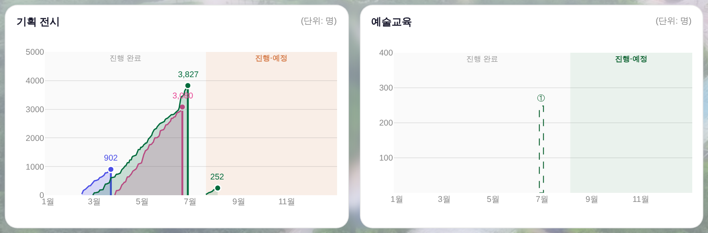
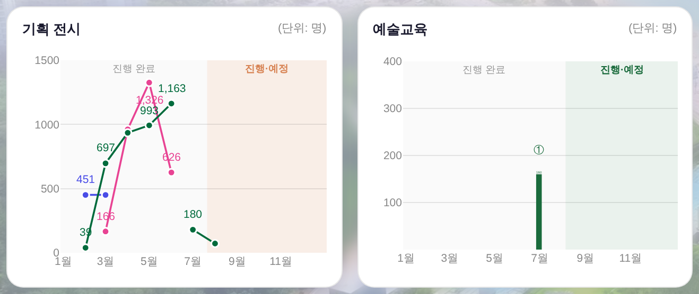

대시보드 3면 — 기획 전시 월별 판매량 꺾은선 · 예술교육 수강생 실값 전후
지시(운영자 260805) ① 「이거 그냥 월별로 쭉 세로 차트 해줘」 ② 「누적 범위로 안 하고, 월별 해당 전시의 판매량을 동그라미로 찍어서 잇는 그래프로 바꿀게」
③ 「이 교육도 이미 끝난 교육 하나 있어 — 그냥 그래프에 나타내주면 됨(공연하고 동일하게) · 수치가 혹시 누락되어 있으면 이거는 160개 판매수량으로 하면 되고, db에 반영되어 있나 봐주셈」 ·
대상 = _bizDrawExhibFlow → _bizDrawExhibMonthly · _bizEduMonthRows ·
화면 = tools/scratch/shot_exmonthly.mjs ?qa=admin 1920×1080 · 전시 값 = 커밋된 거울 data/exhib_daily_2026.js 실측 · 실API·PII 미접촉.
1. 전 · 후
같은 데이터·같은 뷰포트. 전 = git show HEAD:index.html · 후 = 작업트리.
전 — 누적범위 음영(시작 0 → 종료일 최종으로 차오르는 면) · 교육 = 값 없음 파선

후 — 달 눈금마다 그 달 판매량 동그라미 + 선 · 교육 = 수강생 160명 실막대

읽는 법이 바뀐다. 전은 「지금까지 몇 명 봤나(누계)」라서 곡선이 계속 올라가기만 했다 — 어느 달에 잘 팔렸는지는 기울기로 눈짐작해야 했다.
후는 y축이 곧 그 달 판매량이라 3,080명짜리 전시가 5월(1,326)에 몰렸고 6월(626)엔 반토막이라는 게 높이로 바로 보인다.
2. 값은 어디서 오나 — 새 집계 규칙 0 · 창작 0
월 판매량 = 전시일일 누계 실측의 달 간 증가분. 아래 표의 「후」 값은 커밋된 거울에서 그대로 뺀 차이다(화면 라벨과 동일).
| 전시 | 기간 | 전(누계 꼭대기) | 후(월별 판매량) |
|---|---|---|---|
| 창작스튜디오 7기 입주작가 프리뷰 | 02.13~03.22 | 902 | 2월 451 · 3월 451 |
| 어린이미술전 <우리 SUM 타볼래> | 02.27~06.28 | 3,827 | 2월 39 · 3월 697 · 4월 935 · 5월 993 · 6월 1,163 |
| 섬냥이 in 장도 | 03.27~06.21 | 3,080 | 3월 166 · 4월 962 · 5월 1,326 · 6월 626 |
| 숨 쉬는 SUM (진행중) | 07.21~11.01 | 252 | 7월 180 · 8월 72 (집계중) |
- 연 넘어온 전시 = 1/1 이전 마지막 누계를 기준선으로 뺀다 — 작년 몫이 1월 증가분에 얹히지 않게.
- 누계가 줄어든 달(정정)은 0으로 접는다 — 「음수 판매량」이라는 건 없다.
- 일일 실측이 없는 전시 = 한 달 안에 끝난 것만 「총계 = 그 달 판매량」으로 점 하나(정확) · 여러 달에 걸치면 달마다 나눌 근거가 없으므로 파선 자리(값 없음 · 총계는 툴팁이 말한다). 달 배분은 창작이라 안 한다.
- 점 자리 = 그 달 눈금(
ax.tickvals와 같은 좌표) → 점이 「N월」 글자 바로 위에 선다 = 「월별로 쭉」.
3. 예술교육 — DB 조회 결과와 160의 자리
운영자 물음 「db에 반영되어 있나 봐주셈」에 대한 답.
| 확인 대상 | 결과 | 근거 |
|---|---|---|
| 프로그램 시트(예술교육 일정) | 있다 | NO 28 · 2026 화요살롱 - 이낙준(6월) · 인문학 · 소극장 · 06-30 — 그래서 차트에 ①이 서 있었다 |
운영대장 사업구분=교육/특강 2026 행 | 없다 | 있으면 _bizEduMonthRows의 ∪ 규칙이 ②를 하나 더 세운다 — 화면엔 ① 하나뿐 = 2026 교육 행 0건 |
| 수강생 실값(발권유료 · 일일입력 누계) | 없다 | 둘 다 미조인이라 게이지가 값 없음 파선으로 그려졌다(전 이미지 = 라이브 화면과 동일) |
| 이 세션에서 DB에 쓰기 | 못 한다 | GET /api/ops → 401(자격 없음) · 「일일 판매 입력」 모달은 판매중만 올리고 콘텐츠구분==='예술교육'을 명시 제외 → 6월 종료·예술교육은 입구가 없다 |
- 그래서 160은
_BIZ_EDU_SOLD(_BIZ_EX_COL과 같은 예외표 문법)에 운영자 확정값으로 둔다. - 실값이 이긴다 — 운영대장 발권유료 · 판매 축 누계 중 하나라도 들어오면 그쪽이 값이고 이 표는 자동 은퇴한다(값이 갈릴 수 없다).
- 툴팁이 출처를 밝힌다 —
수강생 160명 · 운영자 확정값. 집계로 위장하지 않는다.
운영자 액션 1건. 운영대장에 화요살롱 교육 행(발권유료 합 160)이 들어오면 그 순간부터 화면 값의 출처가 DB로 바뀌고 툴팁 꼬리표가 사라진다. 그때
_BIZ_EDU_SOLD 한 줄을 지우면 된다.4. 좁은 화면(1440×820)
반쪽 카드 폭이 줄어도 달 눈금·점·라벨 규칙은 같다(겹치는 라벨만 생략 — 정확값은 툴팁).
후 — 1440×820

5. 철거·유지 목록
| 구 규약 | 처리 | 사유 |
|---|---|---|
누적범위 채움(fill:'tozeroy') + 알파 층 .20/.15/.11/.08 | 철거 | 면이 사라졌다 = 층을 가를 알파가 필요 없다 |
| 마감 절벽(종료 전시 꼭대기→0 굵은 선) | 철거 | 누계 곡선을 「닫는」 표식 — 월별 점에는 닫을 면이 없다 |
| 피크 동그라미 1개 + 꼭대기 숫자 | 철거 | 이제 모든 달이 동그라미고 라벨도 달마다 붙는다 |
| 「이미 끝난 거가 항상 레이어 위로」(260805) | 유지 | 종료 트레이스를 나중에 싣는다 — 운영자 지시 |
구획 음영 _bizYearZones(진행 완료 │ 진행·예정) | 유지 | 공연·교육 카드와 공용 부품 · 무접촉 |
전시 색 = 캘린더 색(_bizExCol) · 예정 = 파선 자리 | 유지 | 선·동그라미가 같은 색을 그대로 계승 = 새 색 0 |
6. 게이트
npm run check✓ — check_design raw hex 1578/1578 무변(신규 색·토큰·:root0) · check_refs ✓ · build_annual_yr ✓npm run smoke:layout✓ — 1920×1080 · 1440×820 · 1366×768 전건 PASS(박스 Δ0 · 흰 카드 하단 Δ0)check_wiring✓ · 실렌더 pageerror 0 · 전시 점 13개 · 선 4개 · 채움 0(누적 면 철거 확인)